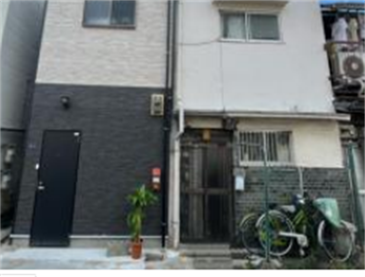
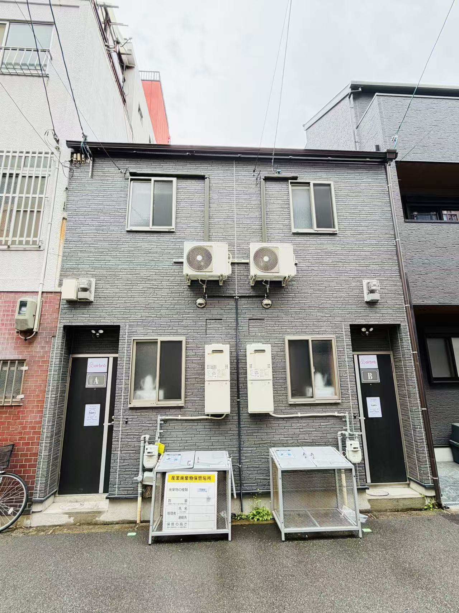
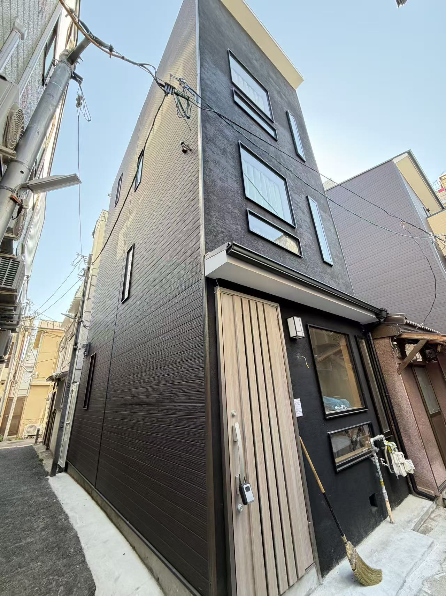

免費線上課程建立市場、流程與風險概念。
投資也可以是旅行與生活，一邊旅行，一邊打造海外被動收入
Welcome Home
把日本購屋參訪，做成一趟看得懂、住得到、聊得清楚的小旅行
我們是一個小夫妻經營的日本購屋旅行品牌，專注協助台灣人理解日本房地產與民宿投資規劃。不是只把您帶去看房，而是透過教學、交流與入住體驗，讓您真正感受未來擁有一間日本民宿的生活方式。
實體說明會用案例、稅務與法律拆解可行性。
日本實地參訪，入住民宿、看屋、做投資分析。
Featured Minpaku
民宿房源介紹
精選大阪市中心與關西生活圈物件，可作為民宿投資、實地參訪與住宿營運規劃案例。

Umenan
梅南民泊營運物件
西成區梅南エリア，花園町站步行約 11 分。小型木造 2 層，現況民泊營運中。

Sanno
山王民泊物件
西成區山王エリア，動物園前約 7 分、天王寺約 10 分。2 層一戶建，翻新完成。

Ebisu
惠美須西民泊物件
浪速區惠美須西エリア，堺筋線惠美須町站步行約 3 分。2 層一戶建，3DK x 2。

Taishi 1
太子一丁目民泊物件
西成區太子エリア，動物園前約 1 分、新今宮約 7 分。增築木造 3 層，翻新完成。

Jozan
淨山民泊物件
西成區山王エリア，動物園前約 7 分、天王寺約 10 分。2 層一戶建 3LDK。

Taishi 2
太子二號民泊物件
西成區太子エリア，動物園前約 1 分、新今宮約 7 分。大空間 3 層，適合多人住宿。
3 Step Journey
三步驟開始日本投資之旅
Sample Tour
三天兩夜日本民宿投資體驗
抵達與交流
機場接送、日本投資說明會、日本晚宴交流。
看屋與入住
熱門區域看房、民宿經營分享、入住實際營運民宿。
分析與規劃
投資方案解析、一對一諮詢、投資規劃建議。
Why Japan
為什麼選擇日本民宿投資？
日本觀光市場穩定成長
日本持續吸引全球旅客，住宿需求穩定。
擁有海外資產配置
打造海外不動產與長期被動收入。
自住與投資兼具
平時可出租營運，旅遊時也能自己入住。
日本生活體驗
享受日本文化、美食與慢活生活。
Client Stories
成功案例
第一次參加日本參訪，就決定購入人生第一間海外民宿。
原本只是想了解日本市場，現在已經擁有穩定租金收入。
入住實際民宿後，更能感受到投資的真實價值。
FAQ
常見問題
不懂日文可以投資嗎？
可以，我們提供完整協助與翻譯服務。
沒有投資經驗也可以參加嗎？
可以，課程專為初學者設計，會先從市場、流程與注意事項開始。
日本民宿是否合法？
我們會協助了解合法民宿與營運方式，並依地區條件評估可行性。
需要準備多少資金？
依地區與物件不同，會有不同規劃方案，建議先透過課程與諮詢建立預算範圍。
Free Course
立即開始您的日本投資之旅
現在報名免費線上課程，了解如何打造屬於自己的日本民宿與海外資產。